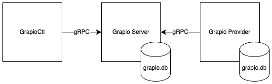

Grapio is an OpenFeature provider for .NET that evaluates feature flags.
Grapio is a feature flag evaluation system that consists of three major components viz. GrapioCtl, Grapio Server and the Grapio Provider. GrapioCtl is a command-line utility that is used to set and unset feature flags. The Grapio Server serves feature flags values and stores them in a SQLite database. The Grapio Provider implements the OpenFeature Specification and Evaluation API.

To configure the Grapio provider, use the extension method AddGrapio() which will register the GrapioProvider service and its configuration GrapioConfiguration as singletons. AddGrapio() will validate the configuration and throw a ValidationException if it fails.
Below is an example configuration of the Grapio Provider:
host.Services.AddGrapio(config =>
{
config.Offline = true;
config.RefreshInterval = 300;
config.Requester = "GrapioProvider";
config.ServerUri = new Uri("http://localhost:3278");
config.ConnectionString = "Data Source=grapio.db;";
});